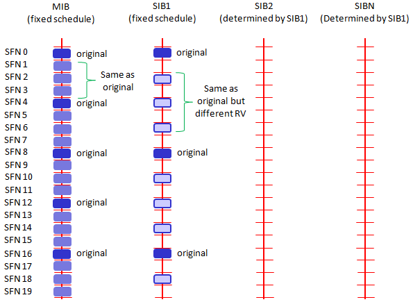

基本流程之八：SIB规划
在LTE系统中，任何一个小区都要发送MIB，SIB1，SIB2。因为许多SIB要发送，因此SIB要合理的规划，避免两个SIB占用相同的资源。
通常，MIB和SIB的发送满足条件：
- MIB以固定周期发送（从SFN=0开始的每四个帧）
- SIB1也是以固定的周期发送（从SFN=0开始的每八个帧）
- 所有其他的SIB的发送周期在SIB1中规定

或许，你已经发现：LTE的SIB1与WCDMA的MIB很像。在测试过程中，你需要非常小心第3步。如果这个值没有设置正确，除了SIB1之外的所有SIB都不会被UE正确译码。这意味着即使所有的SIB都发送了，但是UE会尝试在错误的时间起始点去译码这些SIB。结果，UE不会正确的识别小区，导致UE得出“no service”的结论。
根据36.331的第5.2.1.2节，MIB的规划如下：
The MIB uses a fixed schedule with aperiodicity of 40ms and repetitions made within 40ms. The first transmission of the MIB is scheduled in subframe #0 of radio frames for which the SFN mod 4=0, and repetitions are scheduled in subframe #0 of all other radio frames.
根据36.331第6.2.2节消息的定义，MIB中描述系统帧号SFN为：
Define the 8 mos significant bits of the SFN. As indicated in TS 36.211, the 2 least significant bits of the SFN are acquired implicitly in the PBCH decoding, i.e. timing of 40ms PBCH TTI indicates 2 least significant bits (within 40ms PBCH TTI, the first radio frame: 00, the second radion frame: 01, the third radio frame: 10, the last radio frame:11). One value applies for all serving cells (the associated functionality is common i.e. not performed independently for each cell);
根据36.331第5.2.1.2小结，SIB1的规划如下：
The SystemInformationBlockType1 uses a fixed schedule with a periodicity of 80ms and repetitions made within 80ms. The first transmission fo SystemInformationBlockType1 is scheduled in subframe #5 of radio frames for which the SFN mod 8=0, and repetitions are scheduled in subframe #5 of all other radio frames for which SFN mod 2=0
这意味着即使SIB1的周期是80ms，不同的SIB1拷贝（Redudancy version：RV）的周期是20ms。这意味着在L3，SIB1的周期是80ms，但是在PHY层SIB1的周期是20ms。RV分配的更多细节，参见36.321的第5.3.1节(这一节的最后一部分。)
其他SIBs的传输周期通过SIB1指定：
+-schedulingInfoList ::= SEQUENCE OF SIZE(1..maxSI-Message[32]) [2] | +-SchedulingInfo ::= SEQUENCE | | +-si-Periodicity ::= ENUMERATED [rf16] | | +-sib-MappingInfo ::= SEQUENCE OF SIZE(0..maxSIB-1[31]) [0] | +-SchedulingInfo ::= SEQUENCE | +-si-Periodicity ::= ENUMERATED [rf32] | +-sib-MappingInfo ::= SEQUENCE OF SIZE(0..maxSIB-1[31]) [1] | +-SIB-Type ::= ENUMERATED [sibType3] +-tdd-Config ::= SEQUENCE OPTIONAL:Omit +-si-WindowLength ::= ENUMERATED [ms20]
其中有一件事情需要注意：SIB的映射信息并没有在第一个节点中指明，但是schedulingInfoList的第一条应该总是SIB2（参见36.321）
List of the SIBs mapped to this SystemInformation message. There is no mapping information of SIB2; it is always present in the first SystemInformation message listed in the schedulingInfoList list.
理解子帧的周期是很容易的事情，但是理解SIB在哪一个子帧上传输就没有那么简单了。这与"si-WindowLength"有关。 si-WindowLength 告知一个SIB应该在哪一个窗口内传输。
SIB到底在哪一个子帧传输由一个算法制定，该算法在36.331的第5.2.3节规定。